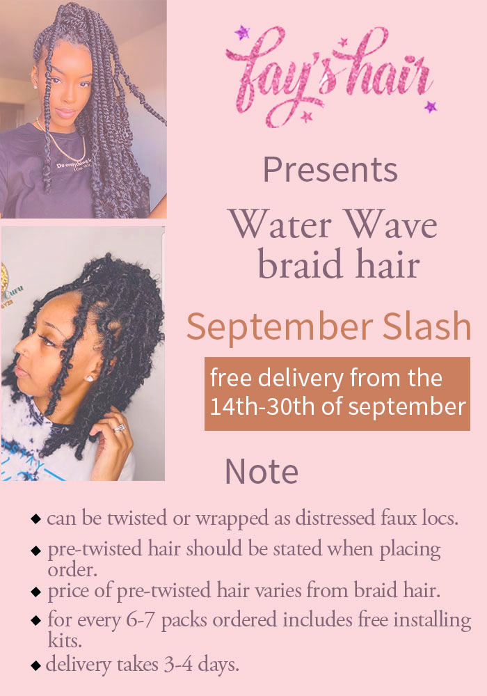
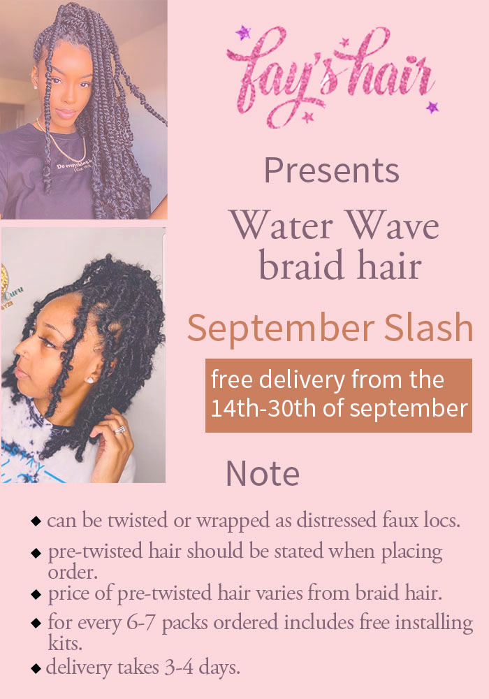

Above are a handful of the designs I've created for businesses I've launched in the last four years.
Being a Graphic Designer has its advantages in that I don't have to break the bank to get a design that reflects my vision.
Above all, I'm a firm believer in getting something cute and sturdy without going overboard, which is why I founded these businesses.
I intended to make all of these things available to everyone, regardless of their financial situation.
I launched the digital art business to combat the stigma associated with owning works of art valued thousands or millions of naira.
I developed artwork that addressed mental health issues as well as uplifting words that may make the owners smile.
About Me
My name is Chukwu Emmanuella Ijeoma and I'm from Delta State, Nigeria, although I was born in Lagos State and have lived here since then.
Lagos is a love/hate relationship for me, yet it is the one location I can call home with certainty. I'm the fifth child in a family of five.
I'm a Graphic Designer and Creative Writer who wants to become a Full-Stack Developer so that I can provide answers to my clients and anyone
else who needs my help.
Praying
Cooking
Checking up on my loved ones
Playing with my dogs
My favorite quote is from an Indian author and Yogi, known for founding the Isha Foundation, which provides everyone in the world with a platform
to explore their spiritual side of life
by means of meditation and yoga.
When you do not know what to choose, show total involvement in everything. —Sadhguru Jaggi Vasudev
Reading novels (romance and thriller in particular), watching movies, listening to music, writing short stories and poetry, watching skits, and going to
the beach are some of my favorite hobbies. Here are a few links to the websites:
netflix and
zlibrary

 
